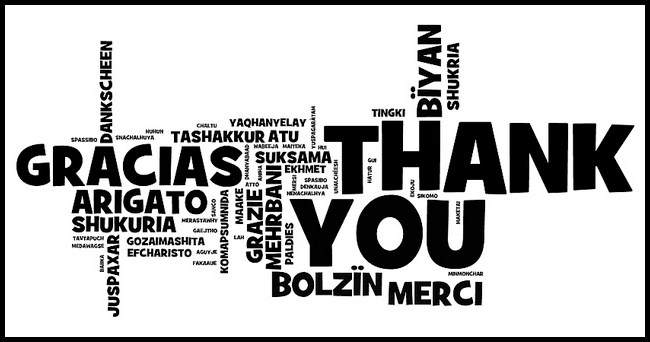

<!DOCTYPE html>
<meta charset="UTF-8">
<html>
  <head>
    <title>Companeuro</title>
    <link rel="icon" type="image/png" href="static/media/favicon.ico">
    <link rel="stylesheet" href="static/jspsych/css/jspsych.css"></link>
    <script src="static/jspsych/jspsych.js"></script>
    <script src="static/jspsych/plugins/jspsych-html-slider-response.js"></script>
    <script src="static/jspsych/plugins/jspsych-audio-keyboard-response.js"></script>
    <script src="static/jspsych/plugins/jspsych-video.js"></script>
    <script src="static/jspsych/plugins/jspsych-survey-text.js?v=6"></script>
    <script src="static/jspsych/plugins/jspsych-html-keyboard-response.js"></script>
    <script src="static/jspsych/plugins/jspsych-survey-multi-choice.js"></script>
    <script src="static/jquery-3.3.1.js"></script>
  </head>
  <body></body>
  <script>
  
  var bienvenida = {
    type: "html-keyboard-response",
    stimulus: "<font size=5.5><p>En el siguiente experimento exploraremos algunas propiedades de la percepción.</p><p>Presione cualquier tecla para continuar o espere unos segundos</p></font>",
    trial_duration: 10000,
    };

  var instrucciones = {
      type: "html-keyboard-response",
      stimulus: "<font size=5.5><p>Mostraremos algunos videos cortos.</p><p>Mirelos atentamente, luego deberás describirlos con el mayor detalle que puedas.</p>" +
          "<p>Presione cualquier tecla para comenzar o espere unos segundos.</p></font>",
        trial_duration: 10000,
    };

  var video1 = {
      type: 'video',
      width: 830,
      sources: ['./static/media/chinitos.mp4'],
      stop:30,
      autoplay: true, 
      controls: true,
    };
  var video2 = {
      type: 'video',
      width: 830,
      sources: ['./static/media/Londres.mp4'],
      stop:30,
      autoplay: true, 
      controls: true,
    };
  
  var descripcion = {
        type: 'survey-text',
        questions: [
        {prompt: 'Describí el video con el mayor detalle que puedas.', value:'', rows: 30, colums: 400}
        ],
        button_label: 'Enviar',
    };

var audio1 = {
      type: 'audio-keyboard-response',
      choices: ['e', 'a'],
      prompt: '<p>Qué tipo de acorde es? e para menor, a para mayor</p>',
      stimulus : 'static/media/audios/1.mp3'
      }

  var slider1 = {
    type: 'html-slider-response',
    stimulus: '<font size=5.5><p>La barrita va de 0 años a 10 años, por favor indique durante cuantos años sostuvo la siguiente actividad:</p></font>',
    labels: [0,1,2,3,4,5,6,7,8,9, '10 años'],
    min: 0,
    max: 10,
    start: 0,
    step: 0.5,
    prompt: "<p>Instrumento musical</p>",
  };
  var choice = {
      type: 'survey-multi-choice',
      questions: [{prompt: "¿Estudiás o estudiaste alguna ciencias exacta?", options: ["Sí", "No"], required:true}],
      questions: [{prompt: "¿Te gusta más el día o la noche?", options: ["Día", "Noche"], required:true}],
      button_label: 'Continuar',
  };
  
  // eu dejen algunas de consumo, no hace falta tanto detalle
  var consumo = {
      type: 'survey-multi-choice',
      prompt: '¿Dirías que las siguientes afirmaciones generalmente se cumplen para vos? En el último mes, consumí en una misma ocasión:',
      questions: [{prompt: '1 L de cerveza, o 3 copas de vino, o 3 tragos de cocktail, o algo de vodka o tequila', options: ["S", "N"], required:true}, 
      {prompt: '1 cigarrillo de marihuana', options: ["S", "N"], required:true},
      {prompt: 'cualquier cantidad de droga alucinógena', options: ["S", "N"], required:true},
      {prompt: '1 cigarrillo de tabaco', options: ["S", "N"], required:true}],
      button_label: 'Continuar',
  };

  // lo mismo acá, cada dato son cientos!! pueden resultar valiosos

  var personales = {
      type: 'survey-text',
      questions: [
      	{prompt: '¿Cuántos años tenés?', value: '', columns: 10},
        {prompt: '¿Cuántas horas de sueño tuviste la noche anterior?', value: '', columns: 20},
        {prompt: '¿En qué barrio vivís?', value: '', columns: 10},
        {prompt: '</p>Priorizá las siguientes capacidades escribiendo los números en el orden que consideres:</p><p>1.Olfato, 2.Visión, 3.Audición, 4.Tacto, 5.Gusto, 6.Sensación de Calor, 7.Posición corporal, 8.Imaginación, 9.Lenguaje, 10.Emoción</p>', value: '', columns: 10},
        {prompt: 'Ingresá tu altura y peso aproximadamente ("ej. 175 cm, 75 kg") ', value: '', columns: 20},
      ],
      button_label: 'Continuar',
  }; 

  var academia = {
  	   type: 'survey-text',
  	   questions:[
  	   {prompt: '¿Qué carrera estudiás o estudiaste?', value: '', columns: 30},
       {prompt: '¿Cuál es tu nivel de formación académica? Ej. "Secundario Completo", "Posgrado Incompleto", ... ', value: '', columns: 20},
       {prompt: '¿Cuántos minutos dedicás por día al uso de redes sociales (Facebook, Instagram, Twitter...)', value: '', columns: 10},
       {prompt: '¿Cuántos minutos por día ves la televisión?', value: '', columns: 10},
       {prompt: '¿Cuántos minutos por día usas viendo Netflix?', value: '', columns: 10},
       ],
      
        button_label: 'Continuar',
  };

  var arte = {
  		type: 'survey-text',
  	    questions: [
  	    {prompt: '¿Realizás o realizaste te alguna actividad artística? Enumerá todas las realizadas, ordenadas de mayor a menor importancia subjetiva para vos', value: '', rows:3, columns:50},
        {prompt: '¿Durante cuántos meses practicaste al menos una vez por semana esta actividad? Indicar un valor correspondiente por actividad' , value:'', colums: 30},
        {prompt: 'Durante los meses de mayor actividad, ¿cuántas horas semanales le dedicas/te en promedio? Indicar un valor correspondiente a cada actividad', value: '', columns: 30},
        {prompt: 'Durante los meses de menor actividad, ¿cuántas horas semanales le dedicas/te en promedio? Indicar un valor correspondiente a cada actividad', value: '', columns: 30},
      ],
      button_label: 'Continuar',
  };

var deporte = {
  		type: 'survey-text',
  	    questions: [
  	    {prompt: '¿Realizás o realizaste algún deporte o actividad física? Enumerá todas las realizadas, ordenadas de mayor a menor importancia subjetiva para vos', value: '', rows:3, columns:50},
        {prompt: '¿Durante cuántos meses practicaste al menos una vez por semana esta actividad? Indicar un valor correspondiente por actividad' , value:'', colums: 30},
        {prompt: 'Durante los meses de mayor actividad, ¿cuántas horas semanales le dedicas/te en promedio? Indicar un valor correspondiente a cada actividad', value: '', columns: 30},
        {prompt: 'Durante los meses de menor actividad, ¿cuántas horas semanales le dedicas/te en promedio? Indicar un valor correspondiente a cada actividad', value: '', columns: 30},
      ],
      button_label: 'Continuar',
  };

var despedida = {
    type: "html-keyboard-response",
    stimulus: "<p>Muchas gracias!</p><p>De parte de Romi, Liber y Mati.",
} 

//timeline es la serie de pasos del experimento
  jsPsych.init({
    timeline: [bienvenida, instrucciones, audio1, slider1, video1, descripcion, video2, descripcion, 
                personales, choice, academia, arte, deporte, consumo, despedida],

    on_finish: function() { $.ajax({
                        type: "POST",
                        data: {'data' : jsPsych.data.get().csv()},
                        url: "http://4c641a70.ngrok.io/postdata",
                        headers: {
                        'Content-Type': 'application/x-www-form-urlencoded'}
                        })
                    }
    
  });
  //
</script>
</html>>